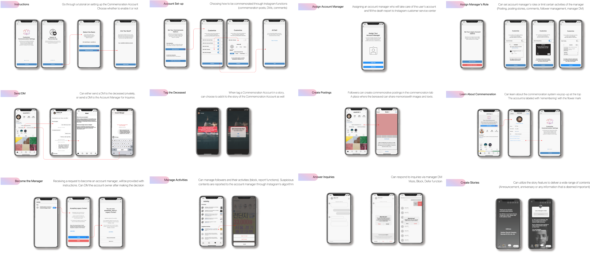

Exploratory Research
In-depth Interview
Transcript Coding
Affinity diagraming
Prototyping and UT
UI Design according to Design Requirements
User Testing
Evaluation
Final Design Solution
Exploratory Study
“One can no more look steadily at death than at the sun.”
- Herman Feifel, thantologist.
With our in-depth interviews, we first approached the users’ thoughts on death, in online situation.
Death, involves not only the phase where we’re no longer here, but also the stages right before.
However, that is often overlooked and not carefully or intensely touched upon.
It’s a subject that is difficult to address, to point at, and is often avoided to talk about.
Likewise, it is something that involves so many stakeholders, that in one research it is unfathomable to understand everyone’s needs. However, it was necessary and promising enough to analyze three main stakeholders, who perform separate tasks in very distinct places.
Stakeholders
Before Death: how do users want their Instagram be or be managed, after their death?
After Death: how have users commemorated the loss of their close ones or processed their deaths?
Legacy Contact: how was it like to manage the post-mortality of their closed ones?
After 5 hrs of affinity diagraming, findings were extracted!

Findings
Theme 1 Processing Death
Processing death begins from the moment the person receives the obituary. He or she goes through following emotional stages: a denial, fear, followed by sorrow, then regret.
Theme 2 Purposes and Practices
of Commemoration
Essence of purposes and practices of commemoration in fact was both to memorialize the deceased, but also for the sake of the bereaved.
Theme 3 Commemorative
Communities
It is born with the common purpose to honor the loved ones, and renew the connections with them, and reaffirm the relationship within the community.
Theme 4 Online Commemoration:
Pros and Cons
Some said online platforms certainly lower that barrier and increase accessibility to commemorate and share experiences between the bereaved. Yet, some were doubtful about the sincerity of online commemoration.
Theme 5 Using Social Media
After Death
Possibility and potential that social media can entail as an expression tool after someone’s death.
Role of writing and community in recovery.
Two motives of commemoration: Remembrance and Recovery.
Sharing emotional recoverty: Community
“I liked it when someone posted a picture that I have never seen of him (...) it felt really good. It was
like seeing a side of him I never knew.” (B3)
“If someone is facing the same experience as I am, if that person reads what I wrote, that person
might find his own way of going through with it.” (B5)
Aperiodic space detached from daily activities.
We defined that an aperiodic space is a space separate from daily lives, yet not so faroff that the bereaved finds if difficult to return back to daily life.
We suggest that this space could be provided within social media and the profile page of the dead.
Malleable Naure of Account after Death.
Social media accounts are representation of oneʼs identity in digital space.
When the owner passes away, it transforms into a space that shares the news, memorialize and is
visited by the bereaved. Dissemination, preservation and community.
“ I think the essence of commemoration will always be the same (...) we may only feel strange and
unfamiliar since itʼs so new, but the act itself may not be so different in essence ” (B5)
Design Requirements
A SYSTEM
to set up commemorative space before death.
Identified Values: Privacy, Volition
A MANAGER
to run the commemorative space.
Identified Values: Protection, Volition, Security
A SPACE
to recover and perpetuate the memory.
Identified Values: Recovery, Remembrance, Privacy, Sincerity
Design Solution: Re-imagining Commemorative Space
1. Setting up the Commemoration Account : All Users
2. Management Account for Account Manager : Legacy Contact
3. Encountering the Commemoration Acount : The Bereaved - followers

User Testing
The prototype is largely divided into three distinct sections each focusing on
:
A. All Instagram Users
B. Account Manager
C. Commemoration Account Followers
* A. Setting up the Commemoration Account
* B. Managing the account as an Account Manager
* C. Commemorating with the Commemoration Account
→ Six Participants
UT Results
A. Setting up the Commemoration Account
→ Rare opportunity to delve into the thought of dying
→ Tedious customization process deemed necessary
B. Managing the account as an Account Manager
→ Its role vital to handle emergencies
→ Connecting the deceased with the bereaved
C. Commemorating with the Commemoration Account
→ Community and space to relieve fear and sorrow
→ Thoughtful UI design involving each stakeholderʼs values
Evaluation Summary
Chance to contemplate death
Importance of volition before death
Significance of space for sharing
Publication